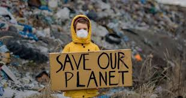

TIPOS DE CONTAMINACION GLOBAL
Deforestación
La deforestación es un proceso mediante el cual se elimina la cobertura forestal de un área de tierra, ya sea para la obtención de madera, la creación de terrenos para la agricultura, la urbanización u otras actividades humanas. Este proceso tiene numerosos impactos negativos en el medio ambiente, incluida la pérdida de biodiversidad, la alteración de los ciclos hidrológicos, la desertificación del suelo y la contribución al cambio climático, ya que los árboles son sumideros naturales de carbono. La deforestación es un problema global que requiere
esfuerzos concertados a nivel local, nacional e internacional para abordarlo de manera efectiva y promover prácticas sostenibles de manejo forestal y conservación de los bosques.
Pesticidas y otros químicos
Los pesticidas y otros productos químicos utilizados en la agricultura y otras industrias pueden tener diversos impactos en el medio ambiente y la salud humana.
Los pesticidas se utilizan para controlar plagas de insectos, malezas y enfermedades en los cultivos, pero su uso excesivo o inadecuado puede tener consecuencias negativas.
Crecimiento demográfico y las necesidades asociadas.
Radiación
El crecimiento demográfico se refiere al aumento en el número de personas que habitan en un área determinada durante un período específico.
Este fenómeno tiene diversas implicaciones en términos de necesidades asociadas y desafíos que deben ser abordados. A medida que la población crece, se incrementan las
demandas de recursos básicos como alimentos, agua, vivienda, energía y servicios de salud y educación. Esto puede generar presiones significativas
sobre los sistemas naturales y las infraestructuras existentes, así como desafíos sociales y económicos, especialmente en regiones densamente pobladas o en desarrollo.
Producción industrial
La producción industrial es el proceso mediante el cual se transforman materias primas o componentes en productos finales o semielaborados a través de diversas operaciones y
tecnologías. Este proceso puede ocurrir en una variedad de industrias, como la manufacturera, la química, la automotriz, la alimentaria, entre otras.
Algunos aspectos importantes de la producción industrial incluyen:
1.Eficiencia y productividad: Las industrias buscan
maximizar la eficiencia y la productividad de sus procesos para optimizar el uso de recursos,
reducir costos y mejorar la competitividad. Esto puede implicar la implementación de tecnologías avanzadas,
a automatización de procesos, la mejora de la logística y la gestión eficiente de la cadena de suministro.
2.Calidad del producto: Garantizar la calidad del producto final es fundamental para
satisfacer las expectativas del cliente y mantener la reputación de la empresa. Esto implica el control de calidad en
todas las etapas del proceso de producción, desde la selección de materias primas hasta el ensamblaje y el empaquetado del producto final.
3.Sostenibilidad: En respuesta a preocupaciones ambientales y sociales, muchas
industrias están adoptando prácticas de producción más sostenibles. Esto puede incluir la reducción de residuos, el
uso eficiente de la energía, la implementación de tecnologías limpias y el cumplimiento de estándares ambientales y
de responsabilidad social corporativa.
4.Innovación: La innovación juega un papel crucial en la producción industrial, ya que las
empresas buscan desarrollar nuevos productos, procesos y tecnologías para mantenerse competitivas en el mercado. Esto puede
implicar la investigación y el desarrollo de nuevos materiales, la mejora de la eficiencia energética, la digitalización de procesos
y la adopción de tecnologías emergentes como la inteligencia artificial y la fabricación aditiva (impresión 3D).
5.Seguridad laboral: La seguridad de los trabajadores es una prioridad en cualquier entorno industrial.
Las empresas deben cumplir con normativas y estándares de seguridad laboral, proporcionar capacitación adecuada, implementar medidas de
prevención de accidentes y garantizar condiciones de trabajo seguras para todos los empleados.

COMO REDUCIR LA CONTAMINACION